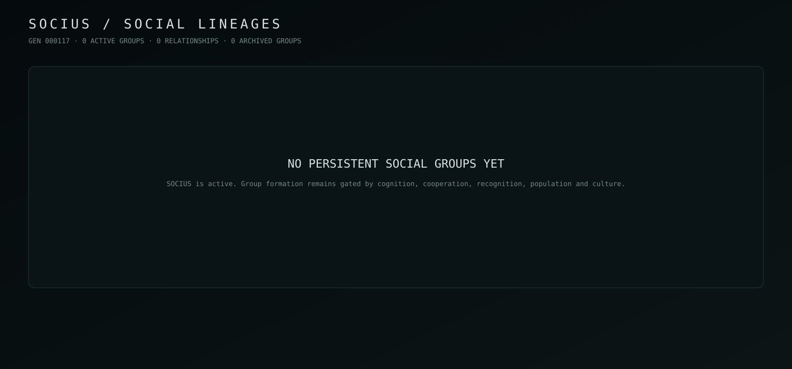

← ORRERY
SOCIUS / SOCIAL LINEAGES
Persistent groups can form, split, merge, relate and collapse without biological extinction.
GEN 000117 · 0 ACTIVE

| GROUP | SPECIES | SHARE | COHESION | COORDINATION | NORMS |
|---|---|---|---|---|---|
| No persistent groups yet. SOCIUS remains active and opportunity-gated. | |||||